Recon_upx: The analysis of UPX-packed file
Aug 12 2024
File: recon_upx
In this blog post, I'll be discussing the use of IDA in performing static and dynamic analysis and unpacking a malware file. For more information related to IDA, visit https://hex-rays.com/ida-pro/. IDA example: https://www.hackers-arise.com/post/2017/06/22/Reverse-Engineering-Malware-Part-3-IDA-Pro-Introduction
First thing first, we'll use file command to get the information about the architecture of the file file ./recon_upx
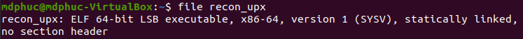
It's pointed out that recon_upx is actually an ELF 64 bit file (built specifically to run on Linux/UNIX). The file is statically linked and no section header. Normally, for a basic ELF file, there are .text, .bss, and .data section headers. This is to say that this ELF file is probably packed. The malware will unpack itself during run time, and then continue executing malicious code.
readelf -a ./recon_upx also validates the packed state of recon_upx as explained above
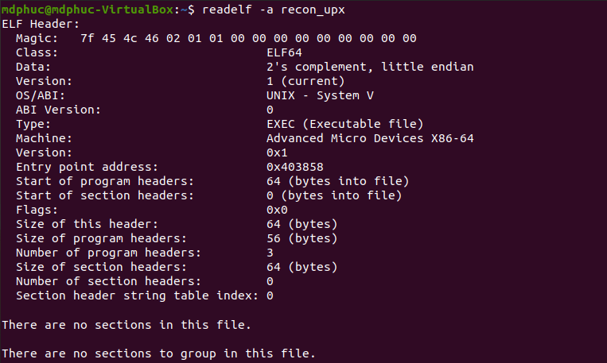
Our task here is first to unpack the file, then to analyze the file. For unpacking, we'll use IDA. Let's first load the program in IDA:
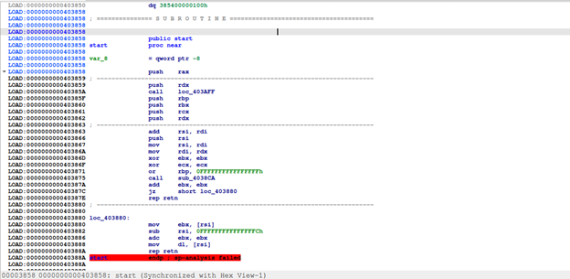
According to readelf's output, once the program runs, EIP will first point to the entry point address 0x403858 (which is the address of start)
Going through many instructions below, we can see `sys_write (write to file, screen, memory, ...), sys_open (open file or virtual memory), sys_mmap (allocate virtual memory space), sys_mprotect (works like VirtualProtect Windows api to change permission of that virtual memory space). It seems like the program is trying to decompress itself into its own virtual memory.
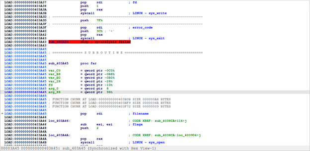
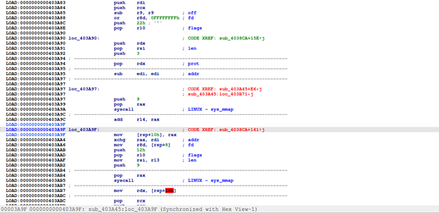
Notice that program continues by doing jmp r13. We'll set a breakpoint here, 0x403AFC, to observe corresponding actions.
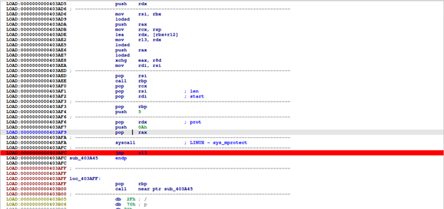
Look at segments at this breakpoint, we can see recon_upx has 0x5000 in its virtual memory space from 0x7FFFF7FF4000 to 0x7FFFF7FF9000 containing DATA and CODE
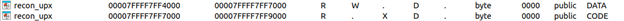
Hex dump we have
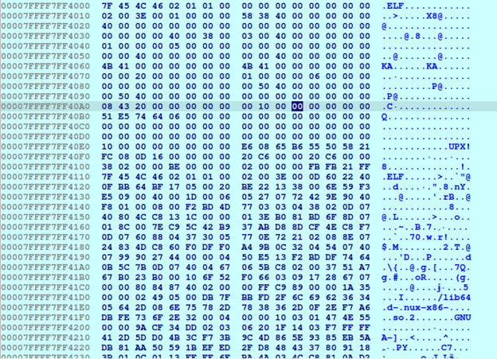
We can presume that the program will then unpack code inside this section and write to its base segments. Continue execution we reach this point, 0x7FFFF7FF7C66, followed by instruction at 0x408C01, where there aresyscall exit and retn.
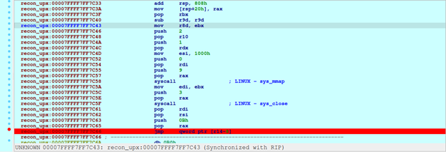
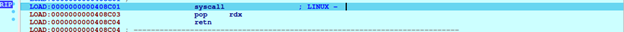
Debug until RIP reaches jmp r12, we have segments table like this
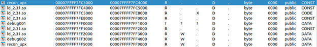
Segments of recon_upx have been changed, we can presume the unpacking process has finished
Continue debuging we'll hit __libc_start_main, and if we'll let the program continue running, main malicious process will be deployed
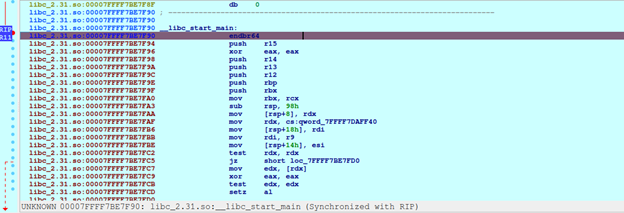
At start, we saw recon_upx spans from 0x400000 to 0x609308
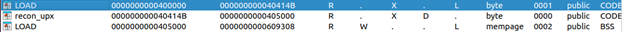
When we hit jmp r12 as shown above, we can dump memory out using the following python code
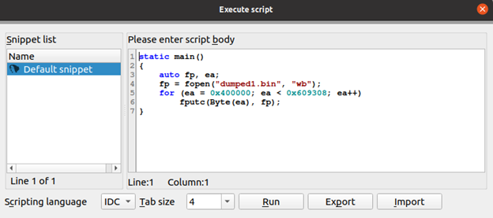
Once file is dumped, we can then try to fix file header and segments. Then we'll have complete file, which can further be analyzed by IDA (pseudocode).
This dump memory process can also be done using IDA pro and its plugin https://github.com/WPeace-HcH/ElfDumper. This plugin allows more efficient dumping and no need to worry about fixing file headers and segments
After this, we can load the dumped file in IDA again and use pseudocode to analyze the functionality of recon_upx